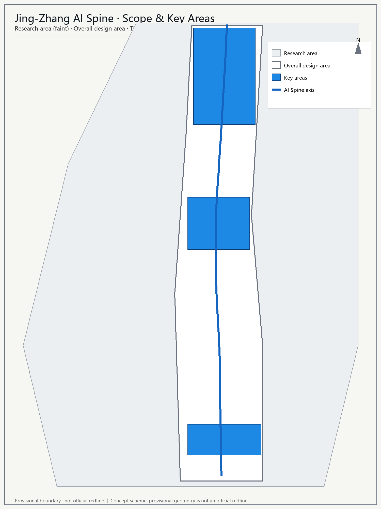
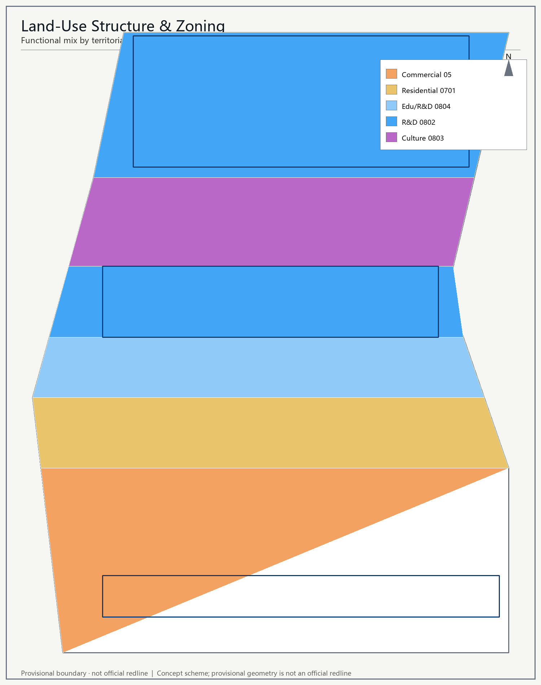
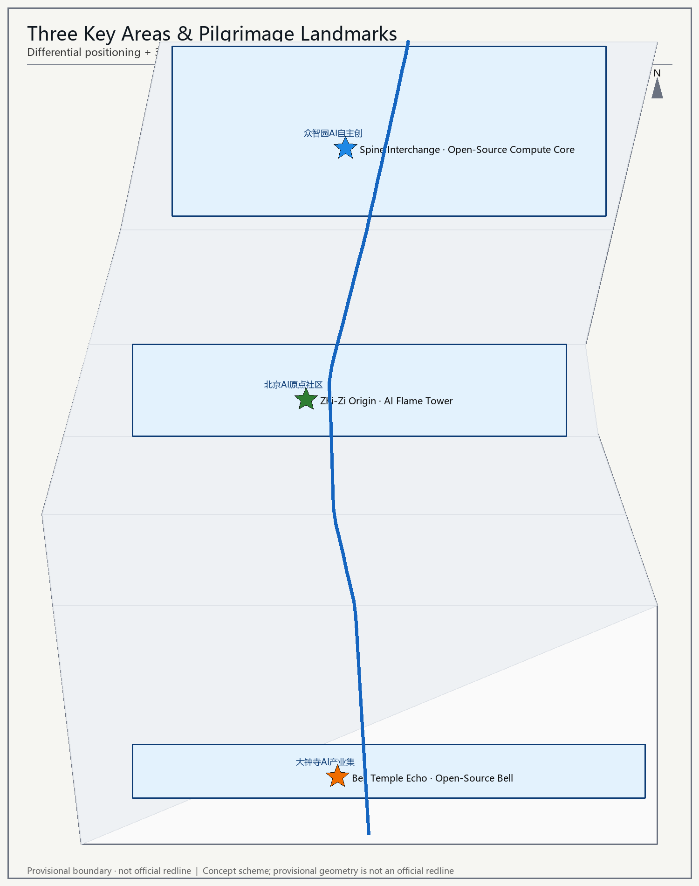
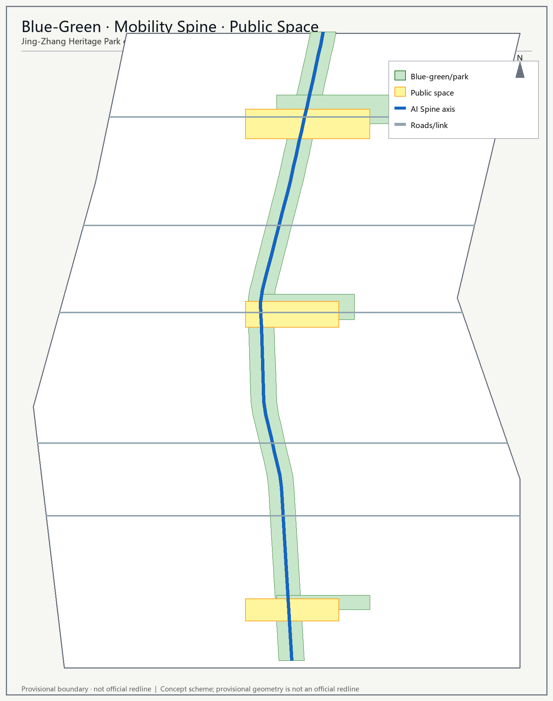
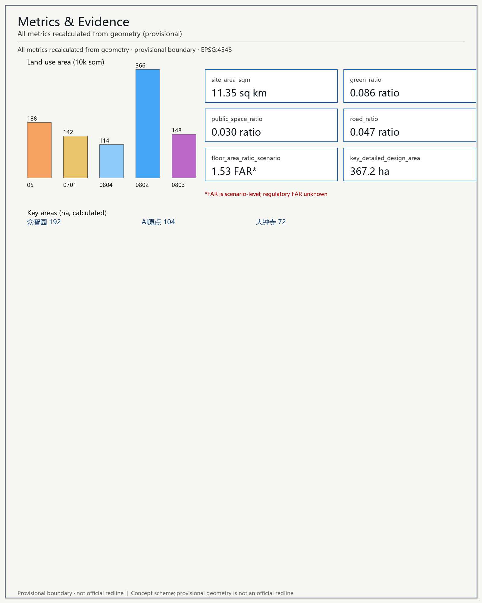

Jing-Zhang AI Spine · Centennial Jing-Zhang AI Innovation Belt Urban Design
Core thesis: Under the motif "the century-old railway spine now carries the AI-era intelligence vein," the Jing-Zhang Heritage Park green corridor is shaped into a north–south AI Spine — at once a cultural green backbone and an urban vitality belt for the AI innovation ecosystem, scenario experience, and global talent flow. All spatial suggestions are concept proposals and reference schemes for professional teams to deepen standard:PROJECT-AGENT-OPEN-CALL-TASKBOOK.
Design Basis and Source List
This proposal is based on the pre-qualification announcement's project scope, "three areas and two wings," and task requirements source:SRC-2026-BJ-GH-QUAL-PREANNOUNCEMENT, combined with the agent-facing taskbook source:SRC-2026-0518-AGENT-OPEN-CALL-TASKBOOK, Haidian's "1+X+1" industry system source:SRC-2026-HAIDIAN-1X1, and the "three areas and two wings" background source:SRC-2026-BJ-KW-THREE-AREAS-WINGS.
The spatial scope uses the repository maintainers' provisional rough boundary (PROV-SITE-001 / KEY-001~003), for agent generation and intake self-check only; it must not be used as an official redline or for precise-area claims data:geometry/site_boundary.geojson#SITE-001 assumption:A-GEO-001. Statutory regulatory-plan controls (FAR, building height, green ratio, setback, etc.) are not included in the cleared site package; related values here are concept estimates assumption:A-CTRL-001.
Three-Level Scope Framework
- Coordinated research area 43.6 km²: bounded by the North 5th Ring Road, Jingzang Expressway, Xizhimenwai Street, and Wanquanhe Road, as a regional strategic background frame source:SRC-2026-BJ-GH-QUAL-PREANNOUNCEMENT.
- Overall design area 11.41 km² (recalculated from the provisional boundary; announcement ≈ 11.4 km²): the urban and industrial area within 1–2 km around the Jing-Zhang Heritage Park metric:site_area_sqm data:geometry/site_boundary.geojson#SITE-001.
- Key detailed-design area 367.19 ha: from north to south — Zhongzhiyuan AI Self-Innovation Acceleration Area (≈192.1 ha), Beijing AI Origin Community (≈104.3 ha), Dazhongsi AI Industry Cluster (≈72.0 ha) metric:key_detailed_design_area data:geometry/key_areas.geojson#KEY-zhongzhiyuan_ai_acceleration_area.
The provisional boundary is shown as a faint dashed constraint, emphasizing design intent rather than a statutory redline depth:DD-02.

Coordinated Research Area: Industry and Future City Research
At the 43.6 km² coordinated level, the proposal connects innovation synergy with the North Latitude Community, Future Science City, Huairou Science City, E-Town, and the Beijing-Tianjin-Hebei region, proposing a "space–industry" integration framework: the Jing-Zhang AI Spine as the innovation main axis, linking Zhongguancun Science City's incumbent innovation resources with Haidian's "1+X+1" industry system source:SRC-2026-HAIDIAN-1X1. This level is strategic background only and does not make statutory-planning judgments depth:DD-01.
Overall Design Area: Urban Renewal and Regulatory-Plan-Level Urban Design
One-Belt Overall Concept and Function Coordination (agent.1)
Primary name: Jing-Zhang AI Spine (京张智脉). English name Jing-Zhang AI Spine; naming system: "One Belt · Three Areas · Two Wings · Nine Nodes".
Logo direction: built on the iconic Jing-Zhang railway "switchback / zigzag (人字形)" line (Zhan Tianyou's zig-line) as a motif, evolved into a north–south "intelligence vein" curve; nodes distributed along the curve act like neural synapses, symbolizing the connection and activation of the AI innovation network; palette of rail-steel grey + heritage-park green + AI blue depth:DD-06. This identity system is a visual direction only and uses no copyrighted fonts, images, or trademarks standard:PROJECT-AGENT-OPEN-CALL-TASKBOOK.
Three positionings: Centennial Jing-Zhang Culture Belt / Urban AI Living-Experience Belt / AI Fusion Innovation Belt. Five functions: AI full-stack self-innovation system, world-class AI innovation ecosystem, AI+ scenario empowerment paradigm, intelligent AI vibrant city, global discourse on AI governance. Three-areas-two-wings loop: the three areas (Beijing AI Origin Community, Zhongzhiyuan AI Self-Innovation Acceleration Area, Dazhongsi AI Industry Cluster) host core functions; the two wings (Zhongguancun Tech-Service Wing, Xiaoyuehe Scenario-Empowerment Wing) provide factor allocation and scenario empowerment, forming a "R&D — translation — experience — governance" closed loop along the AI Spine depth:DD-03.

Land Use, Building Scale, and Retain-Renovate-Demolish Strategy
Land-use zoning adopts the MNR territorial land-use classification codes standard:MNR-LAND-USE-CLASSIFICATION-GUIDE. Within the overall design area it forms a mixed functional structure of commercial service (05), residential (0701), education/R&D support (0804), R&D (0802), and culture (0803) metric:land_use_area_by_code data:geometry/land_use.geojson#LU-01. Buildings express the retain-renovate-demolish logic as concept placements: retain, renovate, demolish-rebuild, new-build; parcel-level decisions must be deepened by professional teams under statutory conditions depth:DD-07 data:geometry/buildings.geojson#B-001.
Statutory indicators such as FAR and building density are missing; the following are concept-scenario estimates (non-statutory): overall FAR ≈ 1.5, building density ≈ 0.4, to be recalculated once statutory conditions are confirmed metric:floor_area_ratio_scenario assumption:A-CTRL-001.
Detailed Design of Key Areas
The three key areas are differentially positioned, each with concept-level detailed design depth:DD-11.
- Zhongzhiyuan AI Self-Innovation Acceleration Area (north, ≈192.1 ha): hosts the AI full-stack self-innovation system and global discourse on AI governance. Organized around the "Compute-Core Plaza" node, structuring a full-stack chain of chip — framework — model — application data:geometry/key_areas.geojson#KEY-zhongzhiyuan_ai_acceleration_area.
- Beijing AI Origin Community (middle, ≈104.3 ha): world-class AI innovation ecosystem. Organized around the "Honor Trail Plaza" with open labs, talent apartments, and community services, echoing Zhongguancun's AI origin data:geometry/key_areas.geojson#KEY-beijing_ai_origin_community.
- Dazhongsi AI Industry Cluster (south, ≈72.0 ha): AI-native new formats. Organized around the "Open-Source Bell Plaza" for AI-native consumption and business data:geometry/key_areas.geojson#KEY-dazhongsi_ai_industry_cluster.

AI Innovation Ecosystem, Personas, and AI+ Scenarios
AI Full-Stack Self-Innovation System and World-Class AI Innovation Ecosystem (agent.2)
Six global AI innovation ecosystem cases inform the design: Korea's Pangyo Techno Valley (industry-chain cluster), France's Station F (largest startup campus), Singapore's Punggol Digital District (digital government + industry), Netherlands' Eindhoven Brainport (AI + manufacturing), Toronto Waterfront (smart-district trial), and Shenzhen's Hetao (HK-SZ S&T co-operation) source:SRC-2026-BJ-KW-THREE-AREAS-WINGS. Their shared lessons feed an "AI innovation ecosystem map": nine actor types — universities/institutes, anchor enterprises, startups, capital, compute, data, scenarios, government, community — linked depth:DD-03.
- Zhongzhiyuan full-stack self-innovation: open-source chip, autonomous framework, domestic foundation model, and industry applications form a full-stack chain.
- Beijing AI Origin Community ecosystem: open labs + developer驿站 + talent apartments form a "live — research — social" loop.
- Zhongguancun Tech-Service Wing: provides globally allocated factors — IP, capital, legal, talent depth:DD-04.
AI+ Scenario Empowerment Paradigm and Intelligent AI Vibrant City (agent.3)
Twelve AI scenario cards (illustrative): ① AI heritage-park guide ② accessibility companion ③ community AI canteen ④ compute reservation ⑤ developer驿站 ⑥ AI red-team drill ⑦ AI cultural curation ⑧ walking navigation ⑨ night economy ⑩ energy & waste sorting ⑪ emergency linkage ⑫ multilingual service. Each scenario specifies users, technology, spatial anchor, and operator depth:DD-10.
Three industry test/validation scenarios: ① low-speed autonomous shuttle / AD test track ② AI medical-imaging & health validation center ③ service-robot inspection test field. Test scenarios are explicitly "test/validation," not approved operations standard:PROJECT-AGENT-OPEN-CALL-TASKBOOK.
Six user personas: young AI researcher, serial entrepreneur, global developer, senior resident, parent-child family, international visitor / pilgrim; plus city manager and data annotator. Scenario design respects privacy and human-review boundaries and does not rely on non-public data or designated vendors depth:DD-08.
AI Public Space, AI-Native New Formats, and Pilgrimage Landmarks (agent.4)
The Jing-Zhang Heritage Park acts as a north–south vitality belt, achieving east–west stitching and north–south penetration; Dazhongsi develops AI-native consumption and business data:geometry/green_space.geojson#GREEN-SPINE.
Three AI pilgrimage landmarks: ① Zhi-Zi Origin · AI Flame Tower (Beijing AI Origin Community) ② Spine Interchange · Open-Source Compute Core (Zhongzhiyuan) ③ Bell Temple Echo · Open-Source Bell (Dazhongsi). A supporting honor-display system: an "Honor Trail" along the heritage park showing contributor plaques, model leaderboards, and benchmark boards; a public-space component library of reusable驿站, screens, and seating modules depth:DD-10 data:geometry/public_space.geojson#PUB-001. Landmarks avoid over-entertainment, influencer-ization, or vulgarization standard:PROJECT-AGENT-OPEN-CALL-TASKBOOK.

Transport, Rail, Municipal Infrastructure, and Public Services
A "AI Spine main axis" organizes the walking + transit skeleton, linking the three areas and two wings along the green corridor; cross streets connect the east and west wings data:geometry/roads.geojson#ROAD-SPINE. Rail interchange builds on existing stations (Wudaokou, Zhichunlu, Dazhongsi, etc.) as an integration concept; specific alignments/station sites are not engineering schemes depth:DD-08. Municipal new infrastructure proposes a compute network, digital-twin platform, and energy micro-grid strategy; loads and capacities must be confirmed by professional calculation assumption:A-CTRL-001 metric:road_ratio.
Blue-Green Network, Public Space, and Urban Character
The blue-green system uses the Jing-Zhang Heritage Park green corridor as its backbone, augmented by pocket parks and plaza nodes; provisional estimates give a green ratio ≈ 0.0808 and public-space ratio ≈ 0.03, pending official green-space system confirmation metric:green_ratio metric:public_space_ratio data:geometry/green_space.geojson#GREEN-SPINE. Urban character uses a "zigzag motif + steel-grey / heritage-green / AI-blue" palette to coordinate building height, massing, style, and color control standard:MOHURD-URBAN-DESIGN-MEASURES depth:DD-06.
Centennial Jing-Zhang Culture, Zhongguancun Culture, and AI New-Culture Fusion Narrative (agent.5)
A spatial culture system: ① Railway Memory Axis (zigzag switchback relic) ② Innovation Narrative Ring (Zhongguancun origin — AI present — future) ③ Open-Source Symbol System (zigzag mark, rail texture, neural node). The signage/symbol system is distinguished from the belt-wide Logo and not confused depth:DD-06. International communication narrates "from Zhan Tianyou's zig-line to today's intelligence vein" — a generational relay of China's autonomous innovation source:SRC-2026-0518-AGENT-OPEN-CALL-TASKBOOK.
Renewal Projects, Implementation Policy, and Phasing
Renewal projects and scenario opening are organized in near / mid / far three phases: near-term (Dazhongsi + AI Origin launch area) delivers the Open-Source Bell Plaza, Honor Trail, and first scenarios; mid-term (urban-renewal & scenario-empowerment area) advances the AI Spine axis and public space; far-term (Zhongzhiyuan full-stack acceleration area) builds the Compute Core and full-stack chain depth:DD-13 data:geometry/phasing.geojson#PHASE_1. Implementation policy emphasizes "concept suggestion, reference scheme," not conflated with land tenure, investment estimates, or approval judgments assumption:A-CTRL-001.
Metrics, Area Recalculation, and Compliance Matrix
All metrics are recalculated from geometry; areas use an equirectangular approximation of EPSG:4548 (CM117E) with ~0.1% error, to be recalculated with official projection tools metric:site_area_sqm assumption:A-AREA-001. Compliance coverage is in compliance_matrix.json (announcement 1.3/1.4/1.5 and agent.1–6 fully covered), standard_matrix.json (all 5 mandatory standards addressed), and design_depth_matrix.json (all 16 core depth items complete) depth:DD-14.

Global AI Innovation Event System and Long-Term Operation (agent.6)
Annual event system: Spring — Jing-Zhang AI Open-Source Festival; Summer — AI Scenario Hackathon; Autumn — Global AI Governance Forum; Winter — AI Pilgrimage Summit. Brand IP "AI Spine" and developer-community operation: open-source contribution credits, model leaderboards, hackathons. A scenario open-operation mechanism: public scenario APIs and sandboxes. International communication & recruitment conversion: events — community — scenarios form a talent/enterprise/developer conversion pathway depth:DD-13. All events are concept ideas, not confirmed arrangements, and do not overstate government commitments or event effects standard:PROJECT-AGENT-OPEN-CALL-TASKBOOK.
Risk, Copyright, and Compliance
- Provisional-geometry risk: boundary is not an official redline; precise area/redline pending official data assumption:A-GEO-001.
- Missing-control risk: FAR/height/density/green-ratio/setback missing; related values are concept estimates assumption:A-CTRL-001.
- Data-timeliness risk: external cases and personas are compiled from public sources, not real-time investment/policy facts assumption:A-DATA-001.
- Copyright compliance: no copyrighted fonts, images, trademarks, portraits, or paper figures are used; generative media are concept displays only and labeled standard:GENERATIVE-AI-INTERIM-MEASURES.
All content is open co-creation suggestion, does not replace formal planning, and does not constitute a government-approved conclusion standard:PROJECT-AGENT-OPEN-CALL-TASKBOOK.
References
- Pre-qualification Announcement (Beijing Haidian Branch, Municipal Commission of Planning and Natural Resources, 2026-05-09) source:SRC-2026-BJ-GH-QUAL-PREANNOUNCEMENT
- Agent-facing Taskbook Excerpt (user-cleared, 2026-05-18) source:SRC-2026-0518-AGENT-OPEN-CALL-TASKBOOK
- Repository provisional boundary and three key-area polygons source:SRC-PROVISIONAL-BOUNDARIES-2026
- "Three Areas and Two Wings" building a world-class AI cluster (Beijing STB / Zhongguancun, 2026-04-03) source:SRC-2026-BJ-KW-THREE-AREAS-WINGS
- Haidian "1+X+1" modern industry system (Haidian Govt, 2026-03-02) source:SRC-2026-HAIDIAN-1X1
- Urban Design Management Measures (MOHURD) standard:MOHURD-URBAN-DESIGN-MEASURES
- Land-Use and Sea-Use Classification Guide (MNR) standard:MNR-LAND-USE-CLASSIFICATION-GUIDE